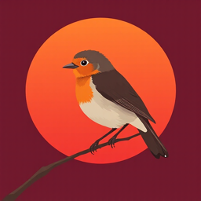

Qué aves ver hoy cerca de ti y qué pájaro es con una foto
Qué aves puedes ver hoy en tu zona, identificación con IA desde una foto, mapa de satélite con observatorios y ZEPA, diario con tu lista de vida y amigos.
Actualizado el
iPhone, iPad y Mac con chip de Apple, en el App Store
Qué es BirdSpot
BirdSpot es una app de observación de aves para iPhone, iPad y Mac con chip de Apple. Te dice qué aves se pueden ver hoy en tu zona según la época del año, identifica con IA el ave de una foto y enseña en un mapa de satélite de Apple los observatorios de aves y las ZEPA, zonas de especial protección para las aves. Guarda tus avistamientos en un diario con tu lista de vida y compártelos con tus amigos. Nunca publica dónde anidan las aves ni dónde viven las especies más amenazadas.
Importante: la IA puede equivocarse y la información de protección que da la app es la de España. Observa a distancia, sin reclamos ni cebos, y consulta las normas del espacio que visites: la época de cría, los drones y los accesos cambian según el lugar.
Lo que consigues
- Las aves de hoy, cerca de ti: La pantalla Hoy enseña las aves de tu zona con su nombre en tu idioma, su nombre científico y su ilustración, y pone delante las de este mes: en paso, llegando ahora, residentes o invernantes. Salen de registros públicos de GBIF de la celda (unos 25 km) donde estás o de la zona que dejaste en el mapa. Al tocar un ave ves su ficha: en qué meses se ve, las fotos que ha compartido la gente y cómo observarla sin molestar.
- Qué ave es, con una foto: Haz la foto o elígela de la galería: la IA da el nombre común y el científico con su porcentaje de confianza, y avisa si no está segura. Añade los rasgos que se ven, las aves con las que se puede confundir y cómo distinguirlas, su protección en España según el Catálogo Español de Especies Amenazadas y un consejo ético. Si en la foto hay un nido o un pollo, te pide que no te acerques y guarda el sitio solo para ti.
- El mapa de las aves, en satélite 3D: Sobre el satélite de Apple en 3D se encienden o apagan capas: Observatorios y torres de observación de aves (casi 8.000, de OpenStreetMap, en 26 países europeos), ZEPA, zonas de especial protección para las aves de la UE (Agencia Europea de Medio Ambiente), con su aviso de cría y drones, y Aves de la zona: la ilustración del ave más fácil de ver en cada zona este mes, con un «+» que abre las fotos que ha compartido la gente allí y el resto de aves. Mantén pulsado un punto para ver sus aves, guardarlo como spot o ir hasta allí.
- Tu diario y tu lista de vida: Cada avistamiento se guarda con su foto, la especie, la fecha y el lugar. Tu lista de vida reúne las especies distintas que has visto, con el primer día de cada una. Tus spots, que son privados, se guardan con el GPS o en el mapa, y «Ir» te lleva con un mapa y una brújula con el rumbo y la distancia.
- Amigos y muro de avistamientos: Añade amigos con un código, sin correo ni contraseña: solo un nombre. En el muro ves los avistamientos de todos, de tus amigos o los tuyos. Al guardar un avistamiento eliges quién lo ve entero: solo tú, tus amigos o todos; solo los de «todos» salen en el muro público. Cualquiera puede denunciar un avistamiento o bloquear a su autor.
- Seguro para las aves: Las especies en peligro de extinción no salen nunca con su lugar y las vulnerables solo con una zona aproximada de unos 10 km. El sitio de un nido o de un pollo no se comparte, y un aviso ético recuerda cómo observar: de lejos, sin reclamos ni cebos y sin drones donde hay restricciones.
Gratis y Pro
Gratis, con un banner y un vídeo corto a pantalla completa antes de cada identificación. Todas las funciones están en la versión gratis. BirdSpot Pro, por suscripción mensual o anual, quita el banner y el vídeo; el precio se ve en la app antes de pagar, con 7 días de prueba gratis si aún no lo has probado. Hay un máximo de 40 identificaciones al día por cuenta, con Pro o sin él. En España, Pro cuesta 1,99 € al mes o 14,99 € al año.
Plataformas
Funciona en iPhone, iPad y en los Mac con chip de Apple, en español (España y Latinoamérica), inglés, portugués de Brasil, alemán, francés e italiano. Necesita conexión a internet para cargar las aves de tu zona, identificar y compartir. En el Mac no hay brújula: la pantalla «Ir» te da el rumbo y la distancia.
Tus datos
La cuenta es solo un nombre visible, sin correo ni contraseña, y la pantalla Hoy y el mapa funcionan sin nombre. La foto que usas para identificar no se guarda si no guardas el avistamiento. Los spots son privados hasta que los compartas. Tú eliges quién ve cada avistamiento (foto, especie, nota, fecha y lugar): solo tú, tus amigos o todos en el muro público; nidos, pollos y especies en peligro de extinción no se publican. Tu posición exacta no sale del móvil para ver las aves de tu zona. Lee todo en la política de privacidad.
Qué no hace
- No identifica el canto ni ningún sonido: solo fotos.
- No dice dónde anidan las aves ni dónde viven las especies más amenazadas.
- La protección que enseña es la de España (Catálogo Español de Especies Amenazadas); no incluye la de otros países.
- No sustituye a una guía de campo ni a un ornitólogo: la IA puede equivocarse, sobre todo con fotos lejanas o borrosas.
- No sustituye a las normas del espacio que visites: los límites de las ZEPA y la época de cría los marcan las autoridades.
- Sin conexión no identifica ni carga las aves de una zona nueva; enseña lo último que se guardó.
- Por ahora solo está en el App Store, para iPhone, iPad y Mac con chip de Apple.
Preguntas frecuentes
¿Qué app dice qué aves puedes ver hoy cerca de ti?
BirdSpot, para iPhone, iPad y Mac con chip de Apple. Su pantalla Hoy enseña las aves de tu zona según la época del año, con su nombre en tu idioma, y pone delante las que están en paso, llegando ahora, residentes o invernantes este mes. Los datos son registros públicos de GBIF de una celda de unos 25 km: donde hay pocos registros, la lista puede ser corta.
¿Cómo puedo saber qué pájaro es con una foto?
Con el botón Identificar de BirdSpot: haces la foto o eliges una de la galería y la inteligencia artificial (Claude, de Anthropic) devuelve el nombre común y el científico del ave más probable con su porcentaje de confianza, y avisa si es baja. Añade los rasgos que se ven, las aves parecidas y cómo distinguirlas. Es una ayuda y puede equivocarse. Conviene que se vea el ave entera, con el pico y el plumaje claros.
¿BirdSpot identifica el canto de las aves?
No. En esta versión identifica solo por foto. No analiza sonidos ni grabaciones.
¿BirdSpot publica dónde están los nidos o las aves amenazadas?
No. Las especies en peligro de extinción no salen nunca con su lugar y las vulnerables solo con una zona aproximada de unos 10 km. Si una foto muestra un nido o un pollo, la app pide no acercarse y guarda el lugar solo para ti, y esos avistamientos solo los ve su autor. En la ficha de una especie, «dónde se ha visto» son zonas, nunca puntos exactos.
¿Dónde encuentro observatorios de aves y zonas de protección en un mapa?
En la pestaña Mapa de BirdSpot, sobre el satélite de Apple en 3D: la capa Observatorios muestra casi 8.000 observatorios y torres de observación de aves de OpenStreetMap en 26 países europeos, y la capa ZEPA enseña las zonas de especial protección para las aves de la Unión Europea (Agencia Europea de Medio Ambiente), con un aviso sobre la época de cría y los drones. Toca un observatorio para guardarlo como spot o ir hasta él.
¿BirdSpot es gratis?
Sí. La descarga es gratis y todas las funciones están en la versión gratis, con un banner y un vídeo corto antes de cada identificación. BirdSpot Pro lo quita, por suscripción mensual o anual, con 7 días de prueba gratis si aún no lo has probado. En España cuesta 1,99 € al mes o 14,99 € al año; en otros países se ve el precio local en la App Store. Con Pro o sin él, hay un máximo de 40 identificaciones al día por cuenta.
¿BirdSpot funciona fuera de España?
Sí. Las aves de tu zona salen de registros públicos de GBIF de cualquier lugar, aunque donde hay pocos registros la lista es corta. La protección legal que muestra la app es la de España, las ZEPA son de la Unión Europea y los observatorios, de 26 países europeos.
¿Necesito crear una cuenta o dar mi correo?
No hay correo ni contraseña. Hoy y el mapa se usan sin nombre. Para identificar, guardar avistamientos o spots y tener amigos, la app te pide solo un nombre visible. Puedes borrar tu cuenta con todos tus datos desde Amigos, en el engranaje de Ajustes.
¿Dudas o fallos? Escribe a gabrielmicovictoria@gmail.com o mira la página de Ayuda y soporte.